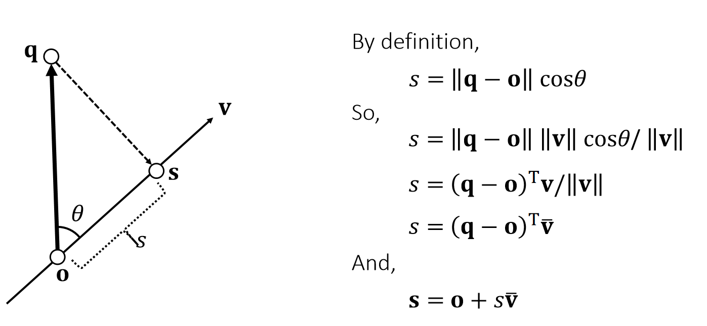

P3
Vector: Basics
定义
An (Euclidean) vector: A geometric entity endowed with magnitude and direction.
$$ \mathbf{P} =\begin{bmatrix} p_x\\ p_y\\ p_z\\ \end{bmatrix}\in \mathbf{R} ^3 $$
$$ \mathbf{o} =\begin{bmatrix} 0\\ 0\\ 0\\ \end{bmatrix} $$
The vector p is defined with respect to the origin o.
坐标系

✅ 用黑来区分，矢量：黑体小写；标量：斜体；矩阵：黑体大写；
P4
The choice of a right-hand or left-hand system is largely due to:
the convention of the screen space.
✅ 左手坐标系，E轴正方向朝屏幕内，好处是物体坐标 x、y、z 都是正值。右手系统的物体都在E轴负方向。
P5
Stacked Vector
Vectors can be stacked up to form a high-dimensional vector, commonly used for describing the state of an object.

Not a geometric vector,but a stacked vector.
P6
Vector Arithematic: Addition and Subtraction
$$ \mathbf{p\pm q=} \begin{bmatrix} p_x\pm q_x\\ p_y\pm q_y\\ p_z\pm q_z\\ \end{bmatrix} $$
$$ \mathbf{p+q=q+p} $$
| Addition is commutative. |
|---|

| Geometric Meanings |
|---|
P7
Example 1: Linear Representation
A (geometric) vector can represent a position, a velocity, a force, or a line/ray/segment.

✅ 图2。同一个公式，对\(t\)做不同的约束，可以定义不同的东西。
\(\mathbf{P}(t)\) 是 \(\mathbf{P}\) 和 \(\mathbf{q}\) 的 blend
P8
Vector Norm
A vector norm measures the magnitude of a vector: its length.

✅ L1-Norm 又称为曼哈顿的距离。没写下标一般默认L2-Norm
P9
Vector Norm: Usage
Distance between q and p： $$ \mathbf{||q-p||} $$
A unit vector：
$$ \mathbf{||p||} =1 $$
Normalization： $$ \mathbf{\bar{p} =p/||p||} $$
P10
Vector Arithematic: Dot Product
A dot product, also called inner product, is:

| Geometric Meanings |
|---|
$$ \begin{array}{c} \mathbf{p\cdot q}=p_xq_x+p_yq_y+p_zq_z=\mathbf{p^Tq} \\ =||\mathbf{p} ||||\mathbf{q} ||\cos \theta \end{array} $$
- \(\mathbf{p\cdot q=q\cdot p} \)
- \(\mathbf{p\cdot (q+r)=p\cdot q+p\cdot r} \)
- \(\mathbf{p \cdot p = ||p||^2_2} \), a different way to write norm.
- If \(\mathbf{p·q} = 0\) and \(\mathbf{p,q}\ne 0\) then \(\cos \theta = 0\),then \(\mathbf{p}\) and \(\mathbf{q}\) are orthogonal.
P11
Example 2: Particle-Line Projection

✅\(X\)为物体中心点的位置，为物体上所有点的整体位移，是前面说的\(T\).
速度是加速度的积分，表示为\(V\)或\(\dot{X} \)
加速度为\(F／M\)，但\(F\)比较复杂，与时间、位置、速度都可能有关系。
位置是速度的积分。
P12
Example 3: Plane Representation


S: The signed distance to the plane
Quiz: How to test if a point is within a box?
P13
Example 4: Particle-Sphere Collision

If collision does happen, then:
$$ ||\mathbf p(t) - \mathbf{c}||^2= r^2 $$
$$ (\mathbf p-\mathbf c+t\mathbf v)·(\mathbf p-\mathbf c +t\mathbf v) =r^2 $$
$$ (\mathbf v·\mathbf v)t^2+2(\mathbf p-\mathbf c)·\mathbf vt+ (\mathbf p-\mathbf c)·(\mathbf p-\mathbf c)-r^2=0 $$
- Three possiblities:
- No root、无碰撞
- One root、擦边 if \(t > 0\)
- Two roots:自碰撞 if \(t > 0 \)
P14
Vector Arithematic: Cross Product

The result of a cross product is a vector:
$$ \mathbf{r=p\times q} =\begin{bmatrix} p_yq_z-p_zq_y \\ p_zq_x-p_xq_z\\ p_xq_y-p_yq_x\\ \end{bmatrix} $$
- \(\mathbf r·\mathbf p = 0; \mathbf r·\mathbf q = 0; ||\mathbf r|| = ||\mathbf p||||\mathbf q|| \sin \theta\)
- \(\mathbf p\times \mathbf q =-\mathbf q\times \mathbf p\)
- \(\mathbf p\times (\mathbf q +\mathbf r) = \mathbf p\times \mathbf q +\mathbf p\times \mathbf r\)
- If \( \mathbf p \times \mathbf q =\mathbf 0\) and \(\mathbf p,\mathbf q\ne 0 \) then \(\sin \theta= 0\), then \(\mathbf p\) and \(\mathbf q \) are parallel (in the same or opposite direction).
P15
Example 5: Triangle Normal and Area

- Cross product gives both the normal and the area.
- The normal depends on the triangle index order, also known as topological order.
P16
Quiz: How to test if three points are on the same line (co-linear)?
P17
Example 6: Triangle Inside/Outside Test

P18


Otherwise, outside.
✅ 假设P点在三角形所在平面上
三个点的顺序很重要，不能搞反。
P19
Example 7: Barycentric Coordinates

Note that:
$$
\frac{1}{2} \mathbf{(x_0−p)×(x_1−p)\cdot n} =\begin{cases}
\frac{1}{2}||\mathbf{(x_0−p)×(x_1−p)} ||& \mathrm{inside} \\
\frac{1}{2}||\mathbf{(x_0−p)×(x_1−p)} || & \mathrm{outside}
\end{cases}
$$
Signed areas:
$$ \mathbf{A_2=\frac{1}{2} (x_0−p)×(x_1−p)\cdot n} $$
$$ \mathbf{A_0=\frac{1}{2} (x_1−p)×(x_2−p)\cdot n} $$
$$ \mathbf{A_1=\frac{1}{2} (x_2−p)×(x_0−p)\cdot n} $$
$$ \mathbf{A_0+A_1+A_2=A} $$
Barycentric weights of p :
$$ b_0=A_0/A \quad b_1=A_1/A \quad b_2=A_2/A $$
$$ b_0+b_1+b_2=1 $$
Barycentric Interpolation
$$ \mathbf{p} =b_0\mathbf{x} _0+b_1\mathbf{x} _1+b_2\mathbf{x} _2 $$
✅ 当 \(\mathbf{p}\) 在三角形外面时，面积为负，但面积总和不变 \(b_0,b_1,b_2\) 为 \(\mathbf{p}\) 在三角形重心坐标系下的坐标
✅ \(\mathbf{p}\) 在三角形外部、重心坐标同样适用，不过权重有负数。
P20
Gouraud Shading

-
Barycentric weights allows the interior points of a triangle to be interpolated.
-
In a traditional graphics pipeline, pixel colors are calculated at triangle vertices first, and then interpolated within. This is known as Gouraud shading.
-
It is hardware accelerated.
-
It is no longer popular.
✅ 由于硬件能力提升，已经可以做到逐像素。
shading,不再需要此方法
通常也不是逐像素计算重心坐标，而是扫描线算法
例如要计算某一行，可以 ：
(1) 插值出行起点像素；
(2) 插值出行终点像素；
(3) 起点与终点间批量插值；
P21
Example 9: Tetrahedral Volume

Edge vectors:
$$ \mathbf{X_{10}=X_1-X_0 \quad \quad X_{20}=X_2-X_0 \quad \quad X_{30}=X_3-X_0} $$
Base triangle area:
$$ A=\frac{1}{2} ||\mathbf{X} _{10}\times \mathbf{X} _{20}|| $$
Height:
$$
h=\mathbf{x} _{30}\cdot\mathbf{n} =\mathbf{x} _{30}\cdot \frac{\mathbf{x} _{10}\times \mathbf{x} _{20}}{||\mathbf{x} _{10}\times \mathbf{x} _{20}||}
$$
Volume:
$$ \begin{align*} V&=\frac{1}{3} ℎA=\frac{1}{6} \mathbf{x} _{30}\cdot \mathbf{x} _{10}\times \mathbf{x} _{20}\\ &=\frac{1}{6}\begin{vmatrix} \mathbf{x} _1 & \mathbf{x} _2 & \mathbf{x} _3 &\mathbf{x} _0 \\ 1& 1 & 1 &1 \end{vmatrix} \end{align*} $$
✅ 四面体
\(h\)是\(\mathbf{x}_{30}\)在 normal 上的投影
行列式是上面叉乘的另一种马法。
P22
Note that the volume \(V =\frac{1}{3}h\mathit{A} =\frac{1}{6} \mathbf{x} _ {30}\cdot (\mathbf{x} _ {10}\times \mathbf{x}_{20})\) is signed.

✅ \(\mathbf{x}_{3}\)的后面法线的同方向上，也正四面体，反之为负四面体，四点共面为零体积。
P23
Example 10: Barycentric Weights (cont.)

- p splits the tetrahedron into four sub-tetrahedra:
$$ \begin{matrix} V_0=\mathrm{Vol} (\mathbf{x}_3,\mathbf{x}_2, \mathbf{x}_1, \mathbf{p} )\\ V_1=\mathrm{Vol} (\mathbf{x}_2,\mathbf{x}_3, \mathbf{x}_0, \mathbf{p} )\\ V_2=\mathrm{Vol} (\mathbf{x}_1,\mathbf{x}_0, \mathbf{x}_3, \mathbf{p} )\\ V_3=\mathrm{Vol} (\mathbf{x}_0,\mathbf{x}_1, \mathbf{x}_2, \mathbf{p} ) \end{matrix} $$
-
p is inside if and only if: \(V_0,V_1,V_2, V_3 > 0\).
-
Barycentric weights:
$$ b_0=V_0/V \quad b_1=V_1/V \quad b_2=V_2/V \quad b_3=V_3/V $$
$$ b_0+b_1+b_2+b_3=1 $$
$$ \mathbf{p} =b_0\mathbf{x} _0+b_1\mathbf{x} _1+b_2\mathbf{x} _2+b_3\mathbf{x} _3 $$
本文出自CaterpillarStudyGroup，转载请注明出处。
https://caterpillarstudygroup.github.io/GAMES103_mdbook/